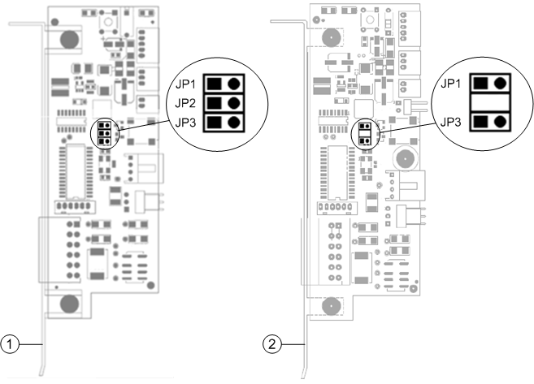

Comark Monitor Card Jumper Settings
Some of the monitoring functions of the Comark monitor card are disabled by jumpers installed on the card by factory default. The installed jumpers vary depending on the card type (old or new) installed on the PC. Refer to the following table and image.
Comark Monitor Jumpers | |
Jumper | Installing this jumper will disable ... |
JP1 | Audible alarm |
JP2 | Monitor watchdog |
JP3 | PC reset function |

Item | Description |
1 | Comark Card old type. |
2 | Comark Card new type. |